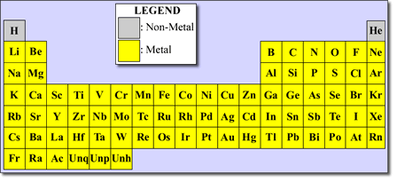

Astronomers refer to all the chemical elements heavier than hydrogen and helium as ‘metals’, even though this includes elements such as carbon and oxygen which are not considered metals in the normal sense.

The production of metals is a consequence of stellar evolution. Although metals lighter than iron are produced in the interiors of stars through nuclear fusion reactions, only a very small fraction escape (through stellar winds or thermal pulsations) to be incorporated into new stars. For this reason, the majority of the metals found in the Universe are produced and expelled in the supernova explosions that mark the end for many stars.
This gradual processing of hydrogen and helium into heavier elements through successive generations of stars means that the metallicity of stars (the fraction of the mass of the star in the form of metals) varies. Very old stars which formed from the almost pristine material of the Big Bang contain almost no metals, while later generations of stars can have up to 5% of their mass in the form of metals. The percentage of metals in the Sun is approximately 2%, indicating that it is a later generation star.